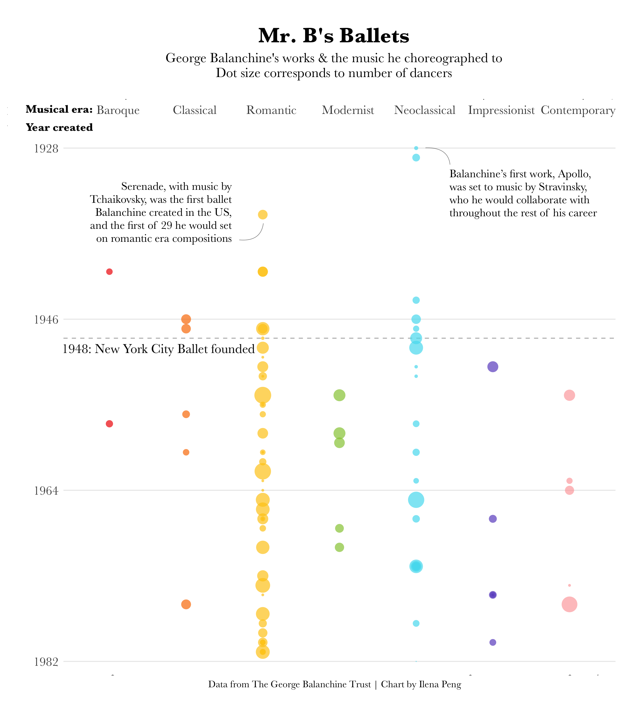

datapointe
Choreographer George Balanchine’s Ballets
September 21, 2023 - In honor of New York City Ballet's 75th anniversary, I decided to revisit a chart of George Balanchine's ballets I had made back in January 2021 when I first began exploring data visualization. Balanchine, one of the most famed 20th century choreographers, pioneered American ballet: Balanchine and Lincoln Kirstein founded the School of American Ballet in 1934 and later, the New York City Ballet in 1948.
Balanchine, also known as Mr. B, created nearly 90 works in his lifetime. This visualization shows the year each ballet was created and what musical era it was choreographed to. The size of the dots gives a loose sense of how many dancers were in the ballet.
I should note that these eras for composers are open to interpretation, as composers' sometimes worked through multiple eras and frequently used techniques from different periods. Also, impressionism and neoclassicism are considered a subset of modernism, but are noted separately in this visualization from other modernist music to show Balanchine's particular draw to these specific genres. Now, some thoughts:
Anyways, I'm not going to get too nerdy here. Here are some links. And go watch the New York City Ballet!
And here's the original, interactive version. Click here to view it in a new tab.